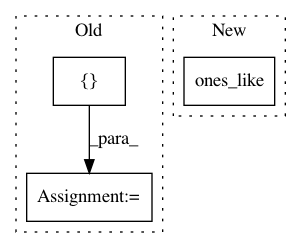

65a215646c653ab808170c8b8c10de2945262613,keras/backend/theano_backend.py,,in_top_k,#Any#Any#Any#,1496
Before Change
targets_i is within top-k values of predictions_i
predictions_top_k = T.argsort(predictions)[:, -k:]
result, _ = theano.map(lambda prediction, target: any(equal(prediction, target)), sequences=[predictions_top_k, targets])
return result
// CONVOLUTIONS
After Change
try:
return T.ones_like(targets, dtype="bool")
except TypeError:
return T.ones_like(targets, dtype="int8")
predictions_k = T.sort(predictions)[:, -k]
targets_values = predictions[T.arange(targets.shape[0]), targets]
return T.ge(targets_values, predictions_k)
In pattern: SUPERPATTERN
Frequency: 3
Non-data size: 3
Instances
Project Name: keras-team/keras
Commit Name: 65a215646c653ab808170c8b8c10de2945262613
Time: 2017-04-07
Author: myutwo150@users.noreply.github.com
File Name: keras/backend/theano_backend.py
Class Name:
Method Name: in_top_k
Project Name: asyml/texar
Commit Name: c8523b2dc735a1b82ca6170e6ca349defe9f77fc
Time: 2017-11-17
Author: shore@pku.edu.cn
File Name: examples/transformer.py
Class Name:
Method Name:
Project Name: tensorflow/ranking
Commit Name: 6bf3f51cd0a312da842157665663c2dad9983248
Time: 2021-01-29
Author: xuanhui@google.com
File Name: tensorflow_ranking/python/losses_impl.py
Class Name: ClickEMLoss
Method Name: _compute_latent_prob